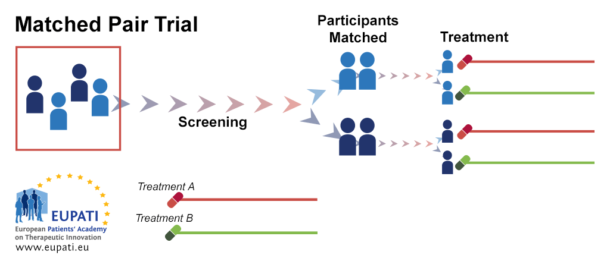

pair pot cross self diff
1 1 1 23.500 17.375 6.125
2 2 1 12.000 20.375 -8.375
3 3 1 21.000 20.000 1.000
4 4 2 22.000 20.000 2.000
5 5 2 19.125 18.375 0.750
6 6 2 21.500 18.625 2.875
7 7 3 22.125 18.625 3.500
8 8 3 20.375 15.250 5.125
9 9 3 18.250 16.500 1.750
10 10 3 21.625 18.000 3.625
11 11 3 23.250 16.250 7.000
12 12 4 21.000 18.000 3.000
13 13 4 22.125 12.750 9.375
14 14 4 23.000 15.500 7.500
15 15 4 12.000 18.000 -6.000Inferência Causal
MPE: Matched-Pairs Experiment
Prof. Carlos Trucíos
ctrucios@unicamp.br
ctrucios@unicamp.br
Instituto de Matemática, Estatística e Computação Científica (IMECC),
Universidade Estadual de Campinas (UNICAMP).
Introdução
Introdução
- MPE é a versão mais extrema do SRE.
- No MPE, temos apenas uma unidade de tratamento e uma de controle em cada estrato (por isso, os estratos são também chamados de pairs)
- Apesar de que MPE é um caso particular do SRE, MPE tem seu próprio método de estimação e inferência (foco da aula de hoje).
- Podemos formar pares baseados na similaridade das covariáveis.
- Com covariável contínua, podemos ordenar as unidades segundo a covariável e formar os pares baseados nas unidades adjacentes.
- Com muitas covariáveis, podemos definir distâncias por pares e formar pares baseados nessas distâncias.
Introdução

MPE
MPE
- Consideremos \(2n\) unidades, as quais são divididas em \(n\) pares (formados com base nas covariáveis).
- Seja \((i, j)\) o index da unidade \(j\) no par \(i\), em que \(i = 1, \cdots, n\) e \(j = 1, 2\).
- Assim, \((i, j)\) tem resultados potenciais \(Y_{ij}(1)\) (tratamento) e \(Y_{ij}(0)\) (controle).
- Dentro de cada par, escolhemos aleatoriamente uma unidade para receber o tratamento (e a outra receberá o controle). Seja \[\begin{equation} Z_i = \begin{cases} 1, \quad \text{se a primeira unidade recebe o tratamento} \\ 0, \quad \text{se a segunda unidade recebe o tratamento} \end{cases} \end{equation}\]
MPE
Definição (MPE):
Um MPE tem mecanismo de atribuição de tratamento dado por \[\{Z_i\}_{i = 1}^n \sim Bernoulli(0.5), \qquad(1)\] com resultados observados dentro do par dados por \[Y_{i1} = Z_i Y_{i1}(1) + (1-Z_i)Y_{i1}(0) \quad e \quad Y_{i2} = Z_i Y_{i2}(0) + (1-Z_i)Y_{i2}(1) \quad (i = 1, \cdots, n).\]
Assim, os dados observados são \((Z_i, Y_{i1}, Y_{i2})_{i = 1}^n.\)
- Se \(Z_i = 1\), a primeira unidade (\(j = 1\)) recebe o tratamento, então o resultado observado da unidade \(j = 1\) será igual ao resultado potencial \(Y_{i1}(1)\) e o resultado observado da unidade \(j = 2\) será \(Y_{i2}(0)\).
- Se \(Z_i = 0\), a segunda unidade (\(j = 2\)) recebe o tratamento, então o resultado observado da unidade \(j = 2\) será igual ao resultado potencial \(Y_{i2}(1)\) e o resultado observado da unidade \(j = 1\) será \(Y_{i1}(0)\).
FRT
FRT
De forma semelhante como temos feito nos outros casos, sempre podemos utilizar FRT para testar a hipóteses nula forte: \[H_{0F}: Y_{ij}(1) = Y_{ij}(0), \quad \forall i = 1, \cdots, n, \text{ e } j =1, 2.\]
Para realizar o FRT corretamente, devemos simular \(\textbf{Z} = (Z_1, \cdots, Z_n)\) de forma que seja compatível com Equation 1.
Seja \[\hat{\tau}_i = \text{Resultado sob Tratamento} - \text{Resultado sob controle} \quad \text{(no par }i),\] a diferença (dentro de cada par) entre tratamento e controle.
FRT
\[\hat{\tau}_i = \text{Resultado sob Tratamento} - \text{Resultado sob controle} \quad \text{(no par }i).\]
- Se \(Z_i = 1 \rightarrow Y_{i1}(1) - Y_{i2}(0) = Y_{i1} - Y_{i2}\).
- Se \(Z_i = 0 \rightarrow Y_{i2}(1) - Y_{i1}(0) = Y_{i2} - Y_{i1}\).
\[\begin{align} \hat{\tau}_i = \text{Resultados sob Tratamento} &- \text{Resultado sob controle} \quad \text{(no par }i) \\ \hat{\tau}_i = \underbrace{(2Z_i - 1)}_{S_i}& (Y_{i1} - Y_{i2}), \end{align}\] em que \(S_i\) é IID com \[\mathbb{E}(S_i) = \mathbb{E}(2 Z_i - 1) = 2\underbrace{\mathbb{E}(Z_i)}_{1/2} - 1 = 0 \quad e \quad \mathbb{V}(S_i) = \mathbb{V}(2 Z_i) = 4 \underbrace{\mathbb{V}(Z_i)}_{1/4} = 1\].
FRT
Exemplo 1
- Definimos a média das diferenças entre os pares como \(\hat{\tau} = n^{-1}\displaystyle \sum_{i = 1}^n \hat{\tau}_i\).
- Sob \(H_{0F}\), \(\mathbb{E}(\hat{\tau}) = 0 \quad e \quad \mathbb{V}(\hat{\tau}) = n^{-2} \displaystyle \sum_{i = 1}^n \mathbb{V}(S_i)(Y_{i1} - Y_{i2})^2 = n^{-2} \displaystyle \sum_{i = 1}^n \hat{\tau}_i^2\)
- Pelo TCL, \[T = \dfrac{\hat{\tau}}{\sqrt{n^{-2}\displaystyle \sum_{i = 1}^n \hat{\tau}_i^2}} \xrightarrow D N(0, 1).\]
Assim, podemos utilizar \(T\) para construir um teste assintótico (ou fazer as permutações como no FRT padrão).
FRT
- Teste T para amostras pareadas!
- \(t_{pairs} = \dfrac{\hat{\tau}}{\sqrt{[n(n-1)]^{-2} \displaystyle \sum_{i = 1}^n (\hat{\tau}_i - \hat{\tau})^2}}.\)
- Mas \(T - t_{pairs} \rightarrow 0\), quando \(n \rightarrow \infty\).
- Sob normalidade, \(t_{pairs} \sim t_{(n-1)}\) que, quando \(n \rightarrow \infty\) converge para uma \(N(0, 1)\).
- Assim, na prática, quando \(n\) for grande, sempre podemos utilizar o \(t_{pairs}\) para construir um teste assintótico para testar \(H_{0F}\).
FRT
Exemplo 2
Baseados nos postos \(R_1, \cdots, R_n\) de \(|\hat{\tau}_1|, \cdots, |\hat{\tau}_n|\), podemos definir a estatística \[W = \displaystyle \sum_{i = 1}^n I(\hat{\tau}_i > 0)R_i.\]
Sob \(H_{0F},\) os \(|\hat{\tau}_i|\) são fixos, o que implica que os \(R_i\)s também são, então:
- \(\mathbb{E}(W) = \dfrac{1}{2} \displaystyle \sum_{i = 1}^n R_i = \dfrac{1}{2} \displaystyle \sum_{i = 1}^n i = \dfrac{n(n+1)}{4} \quad \quad e \quad \quad \mathbb{V}(W) = \dfrac{1}{4} \displaystyle \sum_{i = 1}^n R_i^2 = \dfrac{1}{4} \displaystyle \sum_{i = 1}^n i^2 = \dfrac{n(n+1)(2n+1)}{24}\).
- Pelo TCL, \[w = \dfrac{W - n(n+1) \big / 4}{\sqrt{n(n+1)(2n+1) \big / 24}} \xrightarrow D N(0,1).\]
Assim, podemos utilizar \(w\) para construir um teste assintótico (ou fazer as permutações como no FRT padrão).
FRT
Observação:
No R, podemos utilizar a função t.test() com o argumento paired = TRUE para fazer o teste do exemplo 1 e a função wilcox.test() com o argumento paired = TRUE para fazer o teste do exemplo 2.
FRT
Aplicação
O dataset ZeaMays do pacote HistData, contem informação da altura de 15 pares de milho tratados com fertilização cruzada (cross) ou autofertilização (self), bem como a diferença dentro de cada par (diff).
Queremos testar a hipótese nula forte, \[H_{0F}: Y_{ij}(1) = Y_{ij}(0), \quad \forall i,j.\]
FRT
Aplicação
Construimos uma função para enumerar todos os possíveis vetores de atribuição de tratamento.
Code
[1] 0.02633667
Paired t-test
data: ZeaMays$cross and ZeaMays$self
t = 2.148, df = 14, p-value = 0.02485
alternative hypothesis: true mean difference is greater than 0
95 percent confidence interval:
0.4710482 Inf
sample estimates:
mean difference
2.616667 Neyman
Neyman
O efeito causal médio dentro do \(i\)-éssimo par é \[\tau_i = \dfrac{Y_{i1}(1) - Y_{i1}(0)}{2} + \dfrac{Y_{i2}(1) - Y_{i2}(0)}{2},\] e o efeito causal médio de todas as unidades é \[\tau = n^{-1} \displaystyle \sum_{i = 1}^n \tau_i = (2n)^{-1} \displaystyle \sum_{i = 1}^n \sum_{j = 1}^2 (Y_{ij}(1) - Y_{ij}(0)).\]
Neyman
- \(\hat{\tau}_i = \text{Resultado sob Tratamento}_i - \text{Resultado sob controle}_i\)
- \(\hat{\tau}_i = Z_i [Y_{i1}(1) - Y_{i2}(0)] + (1 - Z_i) [Y_{i2}(1)-Y_{i1}(0)]\) que é não viesado para \(\tau_i\).
- \(\hat{\tau} = n^{-1} \displaystyle \sum_{i = 1}^n \hat{\tau}_i\) é não viesado pra \(\tau\).
- \(\mathbb{V}(\hat{\tau}) = (4n^2)^{-1} \displaystyle \sum_{i = 1}^n [Y_{i1}(1) + Y_{i1}(0)- Y_{i2}(1) - Y_{i2}(0)]^2\)
Neyman
Teorema
Sob MPE, \[\hat{V} = [n(n-1)]^{-1} \displaystyle \sum_{i = 1}^n (\hat{\tau}_i - \hat{\tau})^2,\] é um estimador conservador de \(\mathbb{V}(\hat{\tau})\). Isto é, \[\mathbb{E}(\hat{V}) - \mathbb{V}(\hat{\tau}) = [n(n-1)]^{-1} \displaystyle \sum_{i = 1}^n (\tau_i - \tau)^2 \geq 0.\] A igualdade acontece quando \(\tau_i\) é constante \(\forall i\).
Demostração: (no quadro)
Neyman
- Pelo TCL, \[\dfrac{\hat{\tau}-\tau}{\sqrt{\mathbb{V}(\hat{\tau})}} \xrightarrow D N(0, 1).\]
- Assim, pela superestimação da variância (lembre-se, \(\hat{V}\) é um estimador conservador para \(\mathbb{V}(\hat{\tau})\)), o intervalo \[\hat{\tau} \pm z_{1-\alpha/2}\sqrt{\hat{V}},\] tem confiança de, pelo menos, \(1-\alpha.\)
Neyman
Tanto \(\hat{\tau}\) quanto \(\hat{V}\) podem também ser obtidos por MQO!
Proposição
\(\hat{\tau}\) e \(\hat{V}\) são identicos ao coeficiente e estimador da variância do intercepto da regressão obtida por MQO de \((\hat{\tau}_1, \cdots, \hat{\tau}_n)'\) com apenas o intercepto.
Neyman
Aplicação
[ainda com o mesmo dataset da aplicação anterior] Estamos interessados em testar a hipótese nula fraca, \[H_{0F}: \tau = 0\]
Code
[1] 2.616667 1.483998Ou, equivalentemente
Estimate Std. Error t value Pr(>|t|)
(Intercept) 2.616667 1.218195 2.147987 0.04970294Intervalo de confiança
Ajuste por covariáveis
Ajuste por covariáveis
- Embora tenhamos feito MPE por covariáveis, pode acontecer que \(X_{i1} \neq X_{i2}\). Ou seja, o matching pode não ser perfeito.
- Ademais, podemos ter covariáveis adicionais às utilizadas no MPE.
- Nesses casos, podemos ajustar por covariáveis para melhorar a eficiência do estimador.
Ajuste por covariáveis (FRT)
Para realizar o FRT quando rerandomização não é possível, tinhamos:
Definição: estratégia de pseudo-resultado
Podemos construir a estatística de teste baseados nos residuos (\(\hat{\varepsilon}\)) do modelo ajustado (considerando \(\textbf{Y}\) como variável dependente e \(\textbf{X}\) como independentes) e utilizar os resíduos como o pseudo-resultado para construir o teste.
Para o caso do MPE, podemos utilizar a mesma estratégia descrita acima.
Definição: estratégia da “saida” do modelo (model-output)
Podemos ajustar o modelo (considerando \(\textbf{Y}\) como variável dependente e \(\textbf{X}\) e \(\textbf{Z}\) como independentes) para obter o coeficiente de \(\textbf{Z}\) e utilizá-lo como estatística de teste.
Neste segundo caso, no contexto do MPE, podemos fazer algo parecido. De fato, como veremos nos próximos slides, podemos ajustar uma regressão de \(\hat{\tau}_i\) sob \((1, \hat{\tau}_{X,i})\) e utilizar os coeficientes (e suas variâncias estimadas) para construir a estatística de teste.
Ajuste por covariáveis (Neyman)
Consideremos agora a classe de estimadores (indexados por \(\gamma\)) da forma:
\[\hat{\tau}(\gamma) = \hat{\tau} - \gamma' \hat{\tau}_X,\]
em que \(\hat{\tau}_X = n^{-1} \displaystyle \sum_{i = 1}^n \hat{\tau}_{X,i}\) e \[\hat{\tau}_{X,i} = Z_i(X_{i,1}-{X_{i,2}}) + (1-Z_i)(X_{i,2} - X_{i,1}).\]
Queremos escolher \(\gamma\) tal que \(\mathbb{V}(\hat{\tau}(\gamma))\) seja minima.
Ajuste por covariáveis (Neyman)
\[\mathbb{V}(\hat{\tau}(\gamma)) = \mathbb{V}(\hat{\tau} - \gamma' \hat{\tau}_X) = \mathbb{V}(\hat{\tau}) + \gamma' \mathbb{C}ov(\hat{\tau}_X) \gamma - 2 \gamma'\mathbb{C}ov(\hat{\tau}_X, \hat{\tau}).\]
Derivando w.r.t. \(\gamma\) e igualando a zero:
\[2\mathbb{C}ov(\hat{\tau}_X) \gamma - 2\mathbb{C}ov(\hat{\tau}_X, \hat{\tau}) = 0 \rightarrow \tilde{\gamma} = \mathbb{C}ov(\hat{\tau}_X)^{-1} \mathbb{C}ov(\hat{\tau}_X, \hat{\tau}).\]
A segunda derivada é \(2 \mathbb{C}ov(\hat{\tau}_X) \geq 0\), então \(\tilde{\gamma}\) é ponto de mínimo.
- \(\mathbb{C}ov(\hat{\tau}_X) = n^{-2} \displaystyle \sum_{i = 1}^n \hat{\tau}_{X,i}\hat{\tau}_{X,i}'\).
- Um estimador não viesado para \(\mathbb{C}ov(\hat{\tau}_X, \hat{\tau})\) é \(\hat{\theta} = [n(n-1)]^{-1} \displaystyle \sum_{i = 1}^n (\hat{\tau}_{X,i} - \hat{\tau}_X)(\hat{\tau}_i - \hat{\tau})\).
Ajuste por covariáveis (Neyman)
Então, podemos estimar \(\tilde{\gamma}\) porque é coeficiente associado a \(\hat{\tau}_{X,i}\) na regressão por MQO de \(\hat{\tau}_i\) sob \((1, \hat{\tau}_{X,i})\). Assim, \[\hat{\tau}_{adj} = \hat{\tau}(\hat{\gamma}) = \hat{\tau} - \hat{\gamma}'\hat{\tau}_X,\] que é, aproximadamente, o intercepto da regressão por MQO de \(\hat{\tau}_i\) sob \((1, \hat{\tau}_{X,i})\). Ademais, um estimador (conservador) de \(\mathbb{V}(\hat{\tau}_{adj})\) é dado por \(\hat{V}_{adj} = \hat{V} - \hat{\theta}' \mathbb{Cov}(\hat{\tau}_X)^{-1}\hat{\theta}\).
Ajuste por covariáveis (Neyman)
Proposição
Sob MPE, o estimador ajustado por covariável \(\hat{\tau}_{adj}\) e seu respectivo estimador (conservador) de variância, \(\hat{V}_{adj}\), podem ser aproximados pelo intercepto e seu restectivo estimador de variância da regressão por MQO de \(\hat{\tau}_i\) sob \((1, \hat{\tau}_{X,i})\).
Ajuste por covariáveis
Aplicação
O conjunto de dados disponível aqui.
Code
dados <- read.csv("datasets/children_data.csv", head = TRUE, dec = ",")
dados$diff_x <- dados$x_treatment - dados$x_control
dados$diff_y <- dados$y_treatment - dados$y_control
# MPE Neyman
n <- nrow(dados)
tau_hat <- mean(dados$diff_y)
V_hat <- var(dados$diff_y)/n
c(tau_hat - 1.96 * sqrt(V_hat), tau_hat + 1.96 * sqrt(V_hat))[1] 4.337779 22.512221- Quais seriam suas conclusões?
- Confiaria nos resultados? (justifique)
Ajuste por covariáveis
Ambos os resultados anteriores foram obtidos assumindo que \(n\) é grande. Contudo, \(n = 8\) não parece ser tão grande assim, afetando a aproximação. Sendo assim, utilizaremos a abordagem de Fisher (FRT) com a estatística t studentizada (ou seja, o t-value da regressão de \(\hat{\tau}_i\) sob \((1, \hat{\tau}_{X,i})\).
Aplicação
Code
t_ran <- sapply(1:2^8, function(x) {
z_mpe <- mp_enumerate(x, 8)
diff_y_mpe <- abs(dados$diff_y) * z_mpe
diff_x_mpe <- abs(dados$diff_x) * z_mpe
# MPE FRT
unadj <- summary(lm(diff_y_mpe ~ 1))$coef[1, 3]
unadj2 <- mean(diff_y_mpe)/sqrt(var(diff_y_mpe)/n)
## unadj e unadj2 sao iguais.
# MPE FRT Adj
adj <- summary(lm(diff_y_mpe ~ diff_x_mpe))$coef[1, 3]
out <- c(unadj, unadj2, adj)
return(out)
})
p_valor_unadj <- mean(abs(t_ran[1, ]) >= abs(tau_hat/sqrt(V_hat)))
p_valor_unadj [1] 0.03125Referências
- Peng Ding (2023). A First Course in Causal Inference. Capítulo 7.

Carlos Trucíos (IMECC/UNICAMP) | ME920/MI628 - Inferência Causal | ctruciosm.github.io